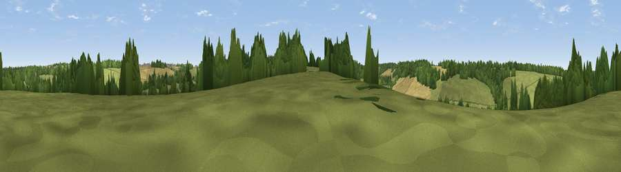

Viewpoint near Denton
#44969 in England · top 96% of its area beats it · near DentonWhere it is
The exact computed spot (TR 21975 47325). Click the marker for map links.
The view, rendered

A 360° render of this exact spot computed from the terrain model, tree cover and land cover — summer colours, afternoon light, calibrated against photographs of famous viewpoints. Real trees, hedges and buildings will differ in detail.
The panorama
Grey silhouette: terrain skyline in each direction (720 bearings, Earth curvature and refraction included). Dashed green: skyline with trees (+15 m) and buildings (+8 m) as obstacles. Blue strip: how far the ground is visible on each bearing.
Where the view opens
Wedge length = distance to the farthest visible ground on that bearing (vegetation-aware). Rings at 10, 25 and 50 km.
What fills the view
54% grassland · 27% woodland · 18% cropland ·
Angular shares of the visible panorama (visual magnitude), not map area. Landscape diversity 0.44 (0–1 Shannon).
Key numbers
More beautiful places nearby
The staircase of upgrades: each row has a higher view potential than everything closer. Driving times are estimates from straight-line distance, calibrated against real road routing — check an actual route before setting out.
| Place | Direction | Drive | Score |
|---|---|---|---|
| Viewpoint near Wootton | SSW · 1 km | ~4 min | 16.1 |
| Viewpoint near Denton | W · 2 km | ~6 min | 20.4 |
| Viewpoint near Elham | WSW · 3 km | ~8 min | 28.0 |
| Viewpoint near Temple Ewell | ESE · 6 km | ~14 min | 33.6 |
| Viewpoint near Etchinghill | SW · 9 km | ~17 min | 48.8 |
| Viewpoint near Old Hawkinge | S · 9 km | ~18 min | 76.9 |
| Viewpoint near Capel-le-Ferne | S · 10 km | ~19 min | 80.2 |
| Viewpoint near Willingdon | WSW · 78 km | ~102 min | 83.4 |
51.18204, 1.17472 · source: screening · position refined by local search. Computed location — check access rights before visiting.